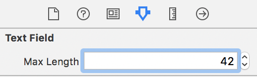

Set the maximum character length of a UITextField
How can I set the maximum amount of characters in a UITextField on the
iPhone SDK when I load up a UIView?
Answer
While the UITextField class has no max length property, it's relatively
simple to get this functionality by setting the text field's delegate and
implementing the following delegate method:
Objective-C
- (BOOL)textField:(UITextField *)textField shouldChangeCharactersInRange:(NSRange)range replacementString:(NSString *)string { // Prevent crashing undo bug – see note below. if(range.length + range.location > textField.text.length) { return NO; } NSUInteger newLength = [textField.text length] + [string length] - range.length; return newLength <= 25; }
Swift
func textField(_ textField: UITextField, shouldChangeCharactersIn range: NSRange, replacementString string: String) -> Bool { let currentCharacterCount = textField.text?.count ?? 0 if range.length + range.location > currentCharacterCount { return false } let newLength = currentCharacterCount + string.count - range.length return newLength <= 25 }
Before the text field changes, the UITextField asks the delegate if the
specified text should be changed. The text field has not changed at this
point, so we grab it's current length and the string length we're inserting
(either through pasting copied text or typing a single character using the
keyboard), minus the range length. If this value is too long (more than 25
characters in this example), return NO to prohibit the change.
When typing in a single character at the end of a text field, the
range.location will be the current field's length, and range.length will
be 0 because we're not replacing/deleting anything. Inserting into the middle
of a text field just means a different range.location, and pasting multiple
characters just means string has more than one character in it.
Deleting single characters or cutting multiple characters is specified by a
range with a non-zero length, and an empty string. Replacement is just a
range deletion with a non-empty string.
A note on the crashing "undo" bug
As is mentioned in the comments, there is a bug with UITextField that can
lead to a crash.
If you paste in to the field, but the paste is prevented by your validation
implementation, the paste operation is still recorded in the application's
undo buffer. If you then fire an undo (by shaking the device and confirming an
Undo), the UITextField will attempt to replace the string it thinks it
pasted in to itself with an empty string. This will crash because it never
actually pasted the string in to itself. It will try to replace a part of
the string that doesn't exist.
Fortunately you can protect the UITextField from killing itself like this.
You just need to ensure that the range it proposes to replace does exist
within its current string. This is what the initial sanity check above does.
swift 3.0 with copy and paste working fine.
func textView(_ textView: UITextView, shouldChangeTextIn range: NSRange, replacementText text: String) -> Bool { let str = (textView.text + text) if str.characters.count <= 10 { return true } textView.text = str.substring(to: str.index(str.startIndex, offsetBy: 10)) return false }
Hope it's helpful to you.
Suggest
Swift 4
import UIKit private var kAssociationKeyMaxLength: Int = 0 extension UITextField { @IBInspectable var maxLength: Int { get { if let length = objc_getAssociatedObject(self, &kAssociationKeyMaxLength) as? Int { return length } else { return Int.max } } set { objc_setAssociatedObject(self, &kAssociationKeyMaxLength, newValue, .OBJC_ASSOCIATION_RETAIN) addTarget(self, action: #selector(checkMaxLength), for: .editingChanged) } } @objc func checkMaxLength(textField: UITextField) { guard let prospectiveText = self.text, prospectiveText.count > maxLength else { return } let selection = selectedTextRange let indexEndOfText = prospectiveText.index(prospectiveText.startIndex, offsetBy: maxLength) let substring = prospectiveText[..<indexEndOfText] text = String(substring) selectedTextRange = selection } }
Edit: memory leak issue fixed.
